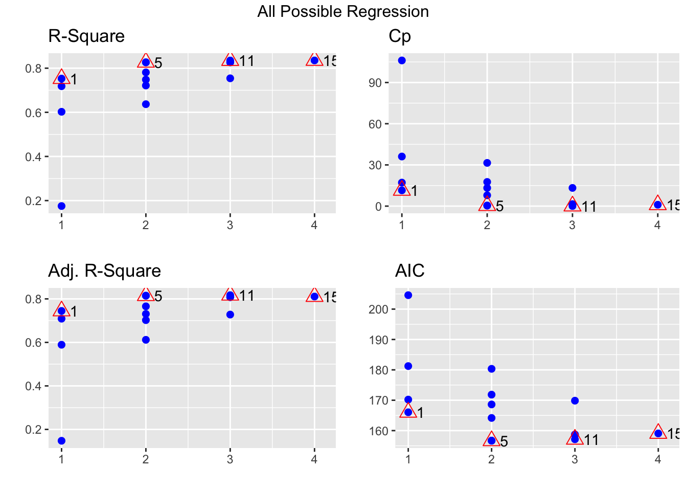
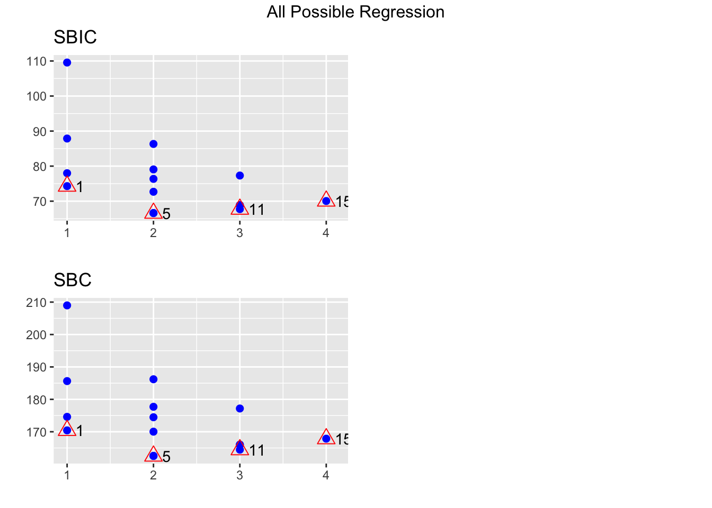
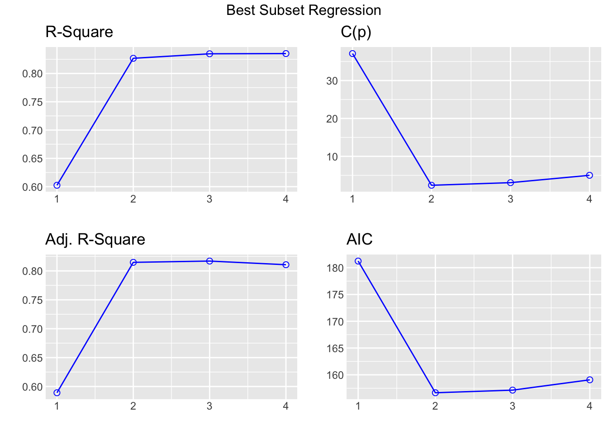
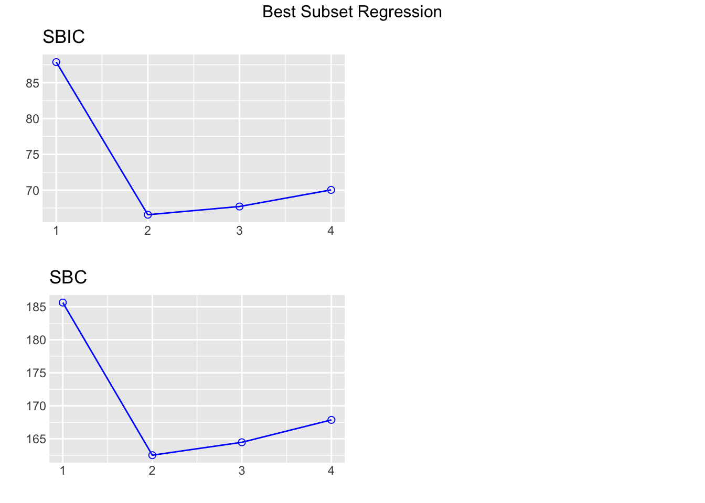

k num_de_regresiones
[1,] 2 4
[2,] 4 16
[3,] 8 256
[4,] 16 65536
[5,] 32 429496729615 Todas las regresiones posibles
En este capítulo se muestra como elegir el mejor modelo de regresión cuando es posible ajustar o entrenar todos los posibles modelos relacionados a un problema.
Si un modelo tiene \(k\) variables cuantitativas, se pueden construir \(2^k\) modelos diferentes con subconjuntos de las variables originales. A continuación un ejemplo de cómo crece el número de todas las regresiones posibles en función del número \(k\) de covariables.
Criterios para elegir modelos
A continuación una lista de los posibles indicadores y el ideal de cada uno de ellos.
- \(R^2\): coeficiente de determinación, entre más grande mejor.
- \(R^2_A\): coeficiente de determinación ajustado, entre más grande mejor.
- \(C_p\) de Mallows: el mejor modelo es aquél para el cual \(C_p\) es el más pequeño posible.
- \(AIC\): Akaike Information Criterium, entre más pequeño mejor.
Paquete olsrr
El paquete olsrr creado por Hebbali (2026) contiene varias funciones útiles para modelación, en particular se destacan dos funciones.
ols_step_all_possible(model)
ols_step_best_subset(model,
max_order = NULL,
include = NULL,
exclude = NULL,
metric = c("rsquare", "adjr", "predrsq",
"cp", "aic", "sbic", "sbc",
"msep", "fpe", "apc", "hsp"))Ejemplo
En este ejemplo vamos a usar la base de datos mtcars para crear todas las regresiones posibles para explicar mpg en función de las covariables disp, hp, wt, qsec, a continuación una parte de la base de datos.
head(mtcars) mpg cyl disp hp drat wt qsec vs am gear carb
Mazda RX4 21.0 6 160 110 3.90 2.620 16.46 0 1 4 4
Mazda RX4 Wag 21.0 6 160 110 3.90 2.875 17.02 0 1 4 4
Datsun 710 22.8 4 108 93 3.85 2.320 18.61 1 1 4 1
Hornet 4 Drive 21.4 6 258 110 3.08 3.215 19.44 1 0 3 1
Hornet Sportabout 18.7 8 360 175 3.15 3.440 17.02 0 0 3 2
Valiant 18.1 6 225 105 2.76 3.460 20.22 1 0 3 1Solución
Lo primero que se debe hacer es ajustar el modelo saturado (o modelo full) para luego crear todas las regresiones posibles que incluyan las covariables disp, hp, wt, qsec.
model <- lm(mpg ~ disp + hp + wt + qsec, data=mtcars)
library(olsrr)
res <- ols_step_all_possible(model)
res # Este objeto contiene los resultados Index N Predictors R-Square Adj. R-Square Mallow's Cp
3 1 1 wt 0.7528328 0.7445939 12.480939
1 2 1 disp 0.7183433 0.7089548 18.129607
2 3 1 hp 0.6024373 0.5891853 37.112642
4 4 1 qsec 0.1752963 0.1478062 107.069616
8 5 2 hp wt 0.8267855 0.8148396 2.369005
10 6 2 wt qsec 0.8264161 0.8144448 2.429492
6 7 2 disp wt 0.7809306 0.7658223 9.879096
5 8 2 disp hp 0.7482402 0.7308774 15.233115
7 9 2 disp qsec 0.7215598 0.7023571 19.602810
9 10 2 hp qsec 0.6368769 0.6118339 33.472150
14 11 3 hp wt qsec 0.8347678 0.8170643 3.061665
11 12 3 disp hp wt 0.8268361 0.8082829 4.360702
13 13 3 disp wt qsec 0.8264170 0.8078189 4.429343
12 14 3 disp hp qsec 0.7541953 0.7278591 16.257790
15 15 4 disp hp wt qsec 0.8351443 0.8107212 5.000000Los resultados anteriores se pueden ver de forma gráfica así:
plot(res)

Ejemplo
En este ejemplo vamos a usar la base de datos mtcars para identificar el mejor modelo que explique mpg en función de las covariables disp, hp, wt, qsec. La restricción que se impone es que el modelo TIENE que incluir la variable hp y la métrica a usar será el \(R^2_{Adj}\).
Solución
model <- lm(mpg ~ disp + hp + wt + qsec, data=mtcars)
library(olsrr)
res <- ols_step_best_subset(model, include="hp", metric="adjr")
res # Este objeto contiene los resultados Best Subsets Regression
------------------------------
Model Index Predictors
------------------------------
1 hp
2 hp wt
3 hp wt qsec
4 hp disp wt qsec
------------------------------
Subsets Regression Summary
----------------------------------------------------------------------------------------------------------------------------------
Adj. Pred
Model R-Square R-Square R-Square C(p) AIC SBIC SBC MSEP FPE HSP APC
----------------------------------------------------------------------------------------------------------------------------------
1 0.6024 0.5892 0.5097 37.1126 181.2386 87.8752 185.6358 477.5836 15.8551 0.5146 0.4506
2 0.8268 0.8148 0.7811 2.3690 156.6523 66.5755 162.5153 215.5104 7.3563 0.2402 0.2091
3 0.8348 0.8171 0.782 3.0617 157.1426 67.7238 164.4713 213.1929 7.4756 0.2461 0.2124
4 0.8351 0.8107 0.771 5.0000 159.0696 70.0408 167.8640 220.8882 7.9497 0.2644 0.2259
----------------------------------------------------------------------------------------------------------------------------------
AIC: Akaike Information Criteria
SBIC: Sawa's Bayesian Information Criteria
SBC: Schwarz Bayesian Criteria
MSEP: Estimated error of prediction, assuming multivariate normality
FPE: Final Prediction Error
HSP: Hocking's Sp
APC: Amemiya Prediction Criteria Los resultados anteriores se pueden ver de forma gráfica así:
plot(res)

Se le recomienda al lector explorar las viñetas del paquete olsrr para conocer todas las bondades del paquete.
Ejemplo
Volver a realizar el ejemplo anterior pero usando la función myAllRegTable del curso de Estadística II.
Solución
Para accerder a la función myAllRegTable se corre el siguiente código y se carga el paquete leaps creado por Fortran code by Alan Miller (2020).
library(leaps)
source("https://raw.githubusercontent.com/fhernanb/Trabajos_Est_2/main/Trabajo%201/funciones.R")Luego se ajusta el modelo y luego si se aplica la función myAllRegTable así:
model <- lm(mpg ~ disp + hp + wt + qsec, data=mtcars)
myAllRegTable(model) k R_sq adj_R_sq SSE Cp Variables_in_model
1 1 0.753 0.745 278.322 12.481 wt
2 1 0.718 0.709 317.159 18.130 disp
3 1 0.602 0.589 447.674 37.113 hp
4 1 0.175 0.148 928.655 107.070 qsec
5 2 0.827 0.815 195.048 2.369 hp wt
6 2 0.826 0.814 195.464 2.429 wt qsec
7 2 0.781 0.766 246.683 9.879 disp wt
8 2 0.748 0.731 283.493 15.233 disp hp
9 2 0.722 0.702 313.537 19.603 disp qsec
10 2 0.637 0.612 408.894 33.472 hp qsec
11 3 0.835 0.817 186.059 3.062 hp wt qsec
12 3 0.827 0.808 194.991 4.361 disp hp wt
13 3 0.826 0.808 195.463 4.429 disp wt qsec
14 3 0.754 0.728 276.788 16.258 disp hp qsec
15 4 0.835 0.811 185.635 5.000 disp hp wt qsec